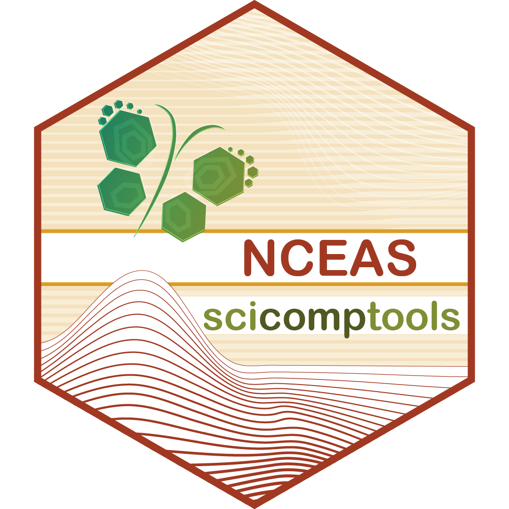

The goal of scicomptools is to house all of the standalone functions written by the National Center for Ecological Analysis and Synthesis (NCEAS) Scientific Computing Team staff that lack a specific project. Currently contains various tools to import, summarize, and visualize data. Non-function scripts created by this team are part of the scicomptasks repository.
Installation
You can install the development version of scicomptools from GitHub with:
# install.packages("devtools")
devtools::install_github("NCEAS/scicomptools")Or download from CRAN with:
install.packages("scicomptools")Current Functions
Modeling / Analysis
-
stat_extractExtracts core summary statistics for model fit objects returned by the following functions:lmerTest::lmer,stats::lm,stats::nls,stats::t.test,nlme::lme,ecodist::MRM, andRRPP::trajectory.analysis
Google Drive-Related
-
drive_toc: Identifies the complete folder hierarchy within a user-supplied URL for a Google Drive folder. Useful in generating a table of contents for a Google Drive. Also allows exclusion of folders by name if there are folders that you would not want included in a table of contents
Data Description / Wrangling
molec_wt: Identifies molecular weight for the specified element (based on name, symbol, or atomic number)read_xl_sheets: Reads in all the sheets in a supplied Microsoft Excel workbook and returns a list of those contentsread_xl_format: Identifies the formatting of every cell in a supplied Microsoft Excel workbook (including comment text)
Text Mining
word_cloud_prep: Performs text mining on a given text column of a dataframe to create a dataframe that is ready for word cloud creationword_cloud_plot: Performs text mining (usingword_cloud_prep) and creates a simpleggplot2word cloud (for those who don’t want to handle their own plotting aesthetics)
Working Directory Management
-
wd_loc: Allows user to easily specify file paths both for local and remote work and then toggle between them in the same script as needed. Useful when work is being done both in local computers and on a remote server
Checking Access Tokens
-
token_check: Checks for whether a token for the supplied API can be found for your current R session. For example, Qualtrics allows direct acquisition of data from R if you have a token and your R session “knows” that string. This function quickly checks whether you’d be able to use that workflow (currently only supports search for Qualtrics and GitHub tokens but could be easily expanded!)